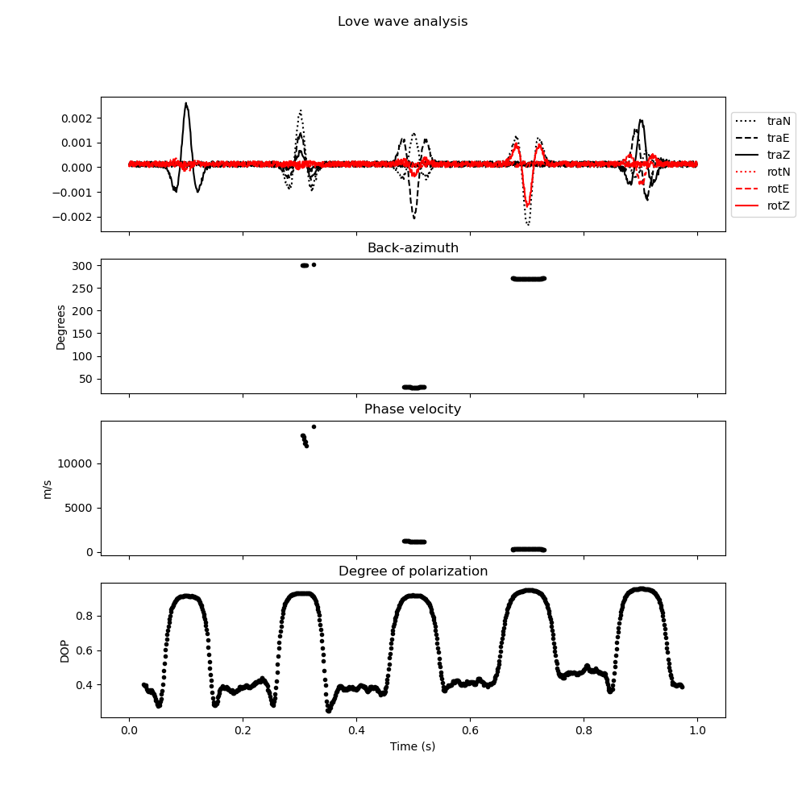
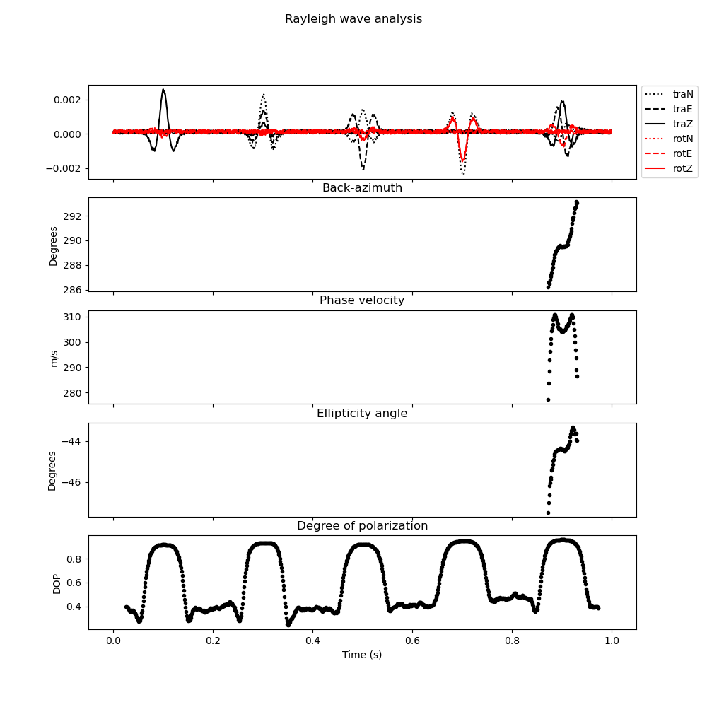

Note
Go to the end to download the full example code
6-C Polarization Analysis: Time-domain wave parameter estimation#
In this tutorial, you will learn how to estimate wave parameters in the time domain using 6C polarization analysis. For efficiency, we use a machine learning model to first classify the wave type before estimating wave parameters.
import matplotlib.pyplot as plt
import numpy as np
from obspy.core import Trace, Stream
from scipy.signal import hilbert, convolve
from twistpy.convenience import ricker
from twistpy.polarization import (
TimeDomainAnalysis6C,
PolarizationModel6C,
SupportVectorMachine,
EstimatorConfiguration,
)
rng = np.random.default_rng(1)
# sphinx_gallery_thumbnail_number = -1
We start by generating a very simple synthetic data set for illustration purposes. The data will contain isolated wave arrivals for a P-wave, an SV-wave, an SH wave, a Love-wave, and a Rayleigh wave. To generate the data, we make use of the pure state polarization models that are implemented in the class ‘twistpy.polarization.PolarizationModel6C’. Note that this example is purely meant to illustrate the usage of TwistPy’s wave type classification tools, by using the same model to generate the synthetics as we use for training and classification, we are practically committing an inverse crime, so that the classification will always yield perfect results.
# Generate an empty time series for each wave
N = 1000 # Number of samples in the time series
signal1 = np.zeros((N, 6)) # Each signal has six components
signal2 = np.zeros((N, 6))
signal3 = np.zeros((N, 6))
signal4 = np.zeros((N, 6))
signal5 = np.zeros((N, 6))
dt = 1.0 / 1000.0 # sampling interval
t = np.arange(0, signal1.shape[0]) * dt # time axis
wavelet, t_wav, wcenter = ricker(
t, 20.0
) # generate a Ricker wavelet with 30 Hz center frequency
wavelet = wavelet[wcenter - int(len(t) / 2) : wcenter + int(len(t) / 2)]
wavelet_hilb = np.imag(
hilbert(wavelet)
) # Here we make use of the Hilbert transform to generate a Ricker wavelet
# with a 90 degree phase shift. This is to account for the fact that, for Rayleigh waves, the horizontal components are
# phase-shifted by 90 degrees with respect to the other components.
We now generate the relative amplitudes with which the waves are recorded on the six-component seismometer. All waves will arrive with a propagation azimuth of 30 degrees, the body waves will have an inclination angle of 20 degrees. The local P-wave and S-wave velocities at the recording station are assumed to be 1000 m/s and 400 m/s, respectively. Both the Love and Rayleigh wave velocities are assumed to be 300 m/s, and the Rayleigh wave ellipticity angle is set to be -45 degrees.
wave1 = PolarizationModel6C(
wave_type="P", theta=20.0, phi=30.0, vp=1000.0, vs=400.0
) # Generate a P-wave polarization model for
# a P-wave recorded at the free surface with an inclination of 20 degrees, an azimuth of 30 degrees. The local P- and
# S-wave velocities are 1000 m/s and 400 m/s
wave2 = PolarizationModel6C(
wave_type="SV", theta=20.0, phi=30.0, vp=1000.0, vs=400.0
) # Generate an SV-wave polarization model
wave3 = PolarizationModel6C(
wave_type="SH", theta=20.0, phi=30.0, vs=400.0, vl=400.0
) # Generate an SH-wave polarization model
wave4 = PolarizationModel6C(
wave_type="L", phi=270.0, vl=300.0
) # Generate a Love-wave polarization model
wave5 = PolarizationModel6C(
wave_type="R", phi=290.0, vr=300.0, xi=-45.0
) # Generate a Rayleigh-wave polarization model with a
# Rayleigh wave ellipticity angle of -45 degrees.
Now we populate our signal with the computed amplitudes by setting a spike with the respective amplitude onto the different locations of the time axis. Then we convolve the data with the Ricker wavelet to generate our synthetic test seismograms.
signal1[100, 2:] = wave1.polarization[2:].real.T
signal1[100, 0:2] = wave1.polarization[0:2].imag.T
signal2[300, :] = wave2.polarization.real.T
signal3[500, :] = wave3.polarization.real.T
signal4[700, :] = wave4.polarization.real.T
signal5[900, 2:] = np.real(wave5.polarization[2:].T)
signal5[900, 0:2] = np.imag(wave5.polarization[0:2].T)
for j in range(0, signal1.shape[1]):
signal1[:, j] = convolve(signal1[:, j], wavelet, mode="same")
signal2[:, j] = convolve(signal2[:, j], wavelet, mode="same")
signal3[:, j] = convolve(signal3[:, j], wavelet, mode="same")
signal4[:, j] = convolve(signal4[:, j], wavelet, mode="same")
if (
j == 0 or j == 1
): # Special case for horizontal translational components of the Rayleigh wave
signal5[:, j] = convolve(signal5[:, j], wavelet_hilb, mode="same")
else:
signal5[:, j] = convolve(signal5[:, j], wavelet, mode="same")
signal = signal1 + signal2 + signal3 + signal4 + signal5 # sum all signals together
# Plot the data
plt.figure(figsize=(10, 5))
plt.plot(t, signal[:, 0], "k:", label="traN")
plt.plot(t, signal[:, 1], "k--", label="traE")
plt.plot(t, signal[:, 2], "k", label="traZ")
plt.plot(t, signal[:, 3], "r:", label="rotN")
plt.plot(t, signal[:, 4], "r--", label="rotE")
plt.plot(t, signal[:, 5], "r", label="rotZ")
plt.text((100 - 120) * dt, 0.7, "P-wave")
plt.text((300 - 120) * dt, 0.7, "SV-wave")
plt.text((500 - 120) * dt, 0.7, "SH-wave")
plt.text((700 - 120) * dt, 0.7, "Love-wave")
plt.text((900 - 120) * dt, 0.7, "Rayleigh-wave")
plt.legend(loc="center left", bbox_to_anchor=(1, 0.5))
plt.xlabel("Time (s)")
Text(0.5, 25.722222222222214, 'Time (s)')
Note that the translational components and the rotational components have different units. The PolarizationModel class yields the amplitudes in acceleration (m/s/s) for the translational components and in rotation rate (rad/s) for the rotational components. Since the rotational signal scales with the local wave slowness, it is barely visible in the plot above. For polarization analysis, we want to make sure that both the translational and the rotational components have the same units and that the amplitudes are comparable, we therefore divide the translational components by a scaling velocity and plot the data again. Here we choose a scaling velocity of 400 m/s. Applying a scaling velocity to the recorded data is a crucial step when processing real data. Choose a scaling velocity that ensures that the translational and rotational signals have comparable amplitudes.
scaling_velocity = 400.0
signal[:, 0:3] /= scaling_velocity # Apply scaling velocity to the translational data
signal += 0.1 * signal.max().max() * np.random.random((N, 6))
plt.figure(figsize=(10, 5))
plt.plot(t, signal[:, 0], "k:", label="traN")
plt.plot(t, signal[:, 1], "k--", label="traE")
plt.plot(t, signal[:, 2], "k", label="traZ")
plt.plot(t, signal[:, 3], "r:", label="rotN")
plt.plot(t, signal[:, 4], "r--", label="rotE")
plt.plot(t, signal[:, 5], "r", label="rotZ")
plt.text((100 - 120) * dt, 0.7 / scaling_velocity, "P-wave")
plt.text((300 - 120) * dt, 0.7 / scaling_velocity, "SV-wave")
plt.text((500 - 120) * dt, 0.7 / scaling_velocity, "SH-wave")
plt.text((700 - 120) * dt, 0.7 / scaling_velocity, "Love-wave")
plt.text((900 - 120) * dt, 0.7 / scaling_velocity, "Rayleigh-wave")
plt.legend(loc="center left", bbox_to_anchor=(1, 0.5))
plt.xlabel("Time (s)")
Text(0.5, 25.722222222222214, 'Time (s)')
To make the synthetics accessible to TwistPy, we convert them to an Obspy Stream object.
data = Stream()
for n in range(signal.shape[1]):
trace = Trace(
data=signal[:, n],
header={"delta": t[1] - t[0], "npts": int(signal.shape[0]), "starttime": 0.0},
)
data += trace
Now to the actual wave type classification. If we haven’t done so already, we first need to train a machine learning model, that allows us to classify the waves. For this, we set up a support vector machine. In our example, we consider wave parameters that are typical for the near surface, so we give the support vector machine a fitting name
svm = SupportVectorMachine(name="love_wave")
Now we can train the model. For details, please check the example on how to train a ‘twistpy.machinelearning.SupportVectorMachine’ object. In short, we want to train the model for wave parameters that are typical for the near surface, and we want to be able to identify P, SV, SH and Rayleigh waves. This means that we do not make a distinction between Love and SH waves here, and Love waves will simply be contained in the SH wave class as the special case of horizontally propagating SH waves. Additionally, we make use of a Noise class, for analysis windows with a random polarization. We allow waves to arrive from all directions (azimuth range [0 360] degrees and inclination range [0 90] degrees).
svm.train(
wave_types=["R", "P", "SV", "L", "Noise"],
N=5000,
scaling_velocity=scaling_velocity,
vp=(400, 3000),
vp_to_vs=(1.7, 2.4),
vl=(100, 3000),
vr=(100, 3000),
phi=(0, 360),
theta=(0, 90),
xi=(-90, 90),
free_surface=True,
C=1,
kernel="rbf",
)
Generating random polarization models for training!
Training Support Vector Machine!
Training successfully completed. Model score on independent test data is '0.9474'!
Model has been saved as '/Users/Dave/Downloads/TwistPy/twistpy/SVC_models/love_wave.pkl'!'
Now that we have trained the model, we can set up our analysis. We will perform 6C polarization analysis in the time domain and use a sliding time window that is 0.05 s long (50 samples) with an overlap between subsequent windows of 50%.
window = {"window_length_seconds": 50.0 * dt, "overlap": 1.0}
analysis = TimeDomainAnalysis6C(
traN=data[0],
traE=data[1],
traZ=data[2],
rotN=data[3],
rotE=data[4],
rotZ=data[5],
window=window,
scaling_velocity=scaling_velocity,
timeaxis="rel",
)
Computing covariance matrices...
Covariance matrices computed!
To classify the waves, we simply do (yielding a classification of the first eigenvector of the covariance matrix):
analysis.classify(svm=svm, eigenvector_to_classify=0)
classification = analysis.classification["0"]
t_windows = (
analysis.t_windows
) # Positions of the sliding time windows where the classification was performed
# Wave parameter estimation
est = EstimatorConfiguration(
wave_types=["L", "R"],
method="ML",
scaling_velocity=scaling_velocity,
use_ml_classification=True,
svm=svm,
)
analysis.polarization_analysis(estimator_configuration=est)
analysis.plot(estimator_configuration=est, dop_clip=0.9)
test = 1
- 
- 
Performing eigen-decomposition of covariance matrices...
Eigenvectors and eigenvalues have been computed!
Wave type classification in progress...
Wave types have been classified!
Computing wave parameters...
Total running time of the script: ( 0 minutes 13.157 seconds)